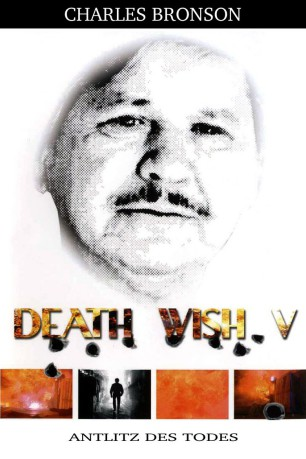

#5592 Death Wish 5 - Antlitz des Todes
 
 IMDB-Wertung: 4.7 / 10
IMDB-Wertung: 4.7 / 10  Metascore: 0
Metascore: 0 
Paul Kersey möchte (wieder mal) seine gewalttätige Vergangenheit hinter sich lassen, was er mit seiner neuen Freundin Olivia und deren Tochter Chelsea in die Tat umsetzen will. Doch Chelseas Vater verlangt das Sorgerecht für seine Tochter und ist dabei bereit, über Leichen zu gehen. Kersey sieht (wieder mal) nur einen Ausweg.
Jahr: 1994
Dauer: 95 Minuten
FSK: 18
Land: USA Studio: Trimark PicturesTonspuren:
Untertitel: Deutsch,
Auflösung: 1080p (1920x1040) Größe: 10956 MB
Genre: Action, Thriller, Drama, Krimi
Regisseur: Allan A. Goldstein
Drehbuch: James Napier Robertson
Soundtrack:
Darsteller:
 Charles Bronson als Paul Kersey
Charles Bronson als Paul Kersey- Lesley-Anne Down als Olivia Regent
 Michael Parks als Tommy O'Shea
Michael Parks als Tommy O'Shea Chuck Shamata als Sal Paconi
Chuck Shamata als Sal Paconi Robert Joy als Freddie 'Flakes'
Robert Joy als Freddie 'Flakes' Saul Rubinek als Brian Hoyle
Saul Rubinek als Brian Hoyle Miguel Sandoval als Hector Vasquez
Miguel Sandoval als Hector Vasquez Kenneth Welsh als Lt. Mickey King
Kenneth Welsh als Lt. Mickey King- Lisa Inouye als Janice Omori
- Claire Rankin als Maxine
- Kevin Lund als Chuck Paconi
- Erica Fairfield als Chelsea Regent
- Jefferson Mappin als Big Al
- Michael Dunston als Reg
- Sharolyn Sparrow als Dawn
- Anna Starnino als Sister
- Elena Kudaba als Housekeeper
- Andrea Mann als Hoyle's Wife
- Scott Spidell als Frankie
- Tim MacMenamin als Mickey
- Sandro Limotta als Angel
- Alison Sealy-Smith als Doctor
- Michelle Moffat als T.V. Reporter
- Allan A. Goldstein als Toy Store Clerk
- Marcello Meleca als Hoyle's Boy
- Tony Meyler als Agent #1
- Dougie Richardson als Cab Driver
- Tova Gallimore als Model #1
- Kimberley Cody als Model #2
- Mikki Greaves als Model #3
- Trish Olsthoorn als Model #4
- Jenni-Leigh Girard als Model #5
- Beverley Anderson als Model #6
- Lisa Heughan als Model #7
- Maxine Elaine als Model
- Kendal Hunter als Model
- Melissa Illes als Model
- Mara Matejic als Model
- Elle Patille als Model
- Jamie Jones als Biker
Datei: X:\FSK18-Collections\Death Wish\Death Wish 5 - Antlitz des Todes (1994, FSK18, 1920x1040).mkv seit 20.02.2017
Festplatte: FSK18
 Es gibt insgesamt 9 Filme in der Gruppe 'FSK18-Collections\Death Wish'
Es gibt insgesamt 9 Filme in der Gruppe 'FSK18-Collections\Death Wish'